Gilbert 21 Quick-start Guide
The following steps should enable you to get up and running quickly with Gilbert 21.
Install the software and database
First of all, download and install the software (from the downloads page). Follow the prompts to install the software. Once the software is installed, it will start automatically and you will see the form shown below. Before you can use it, you need to set up some options.
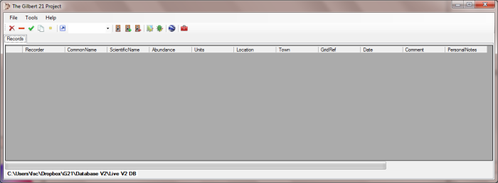
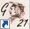(When you next want to start Gilbert 21, you can do it from the Gilbert 21 icon, like the one shown on the right, which be on on your desktop. There is also a Windows start menu item for the Gilbert 21 project.)
Set the Gilbert 21 options
Invoke the options form by clicking on the Options tool-button (red toolbox icon).
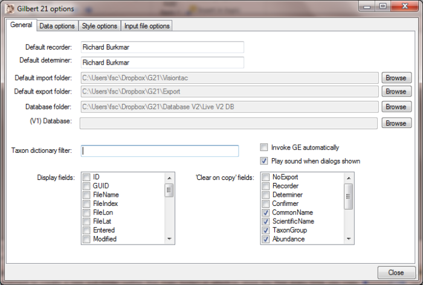
The options you need to deal with at this stage are all at the top of this form. Most importantly you need to provide values for Default recorder, Default determiner (both will be your name) and Database folder.
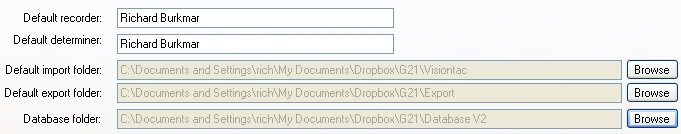
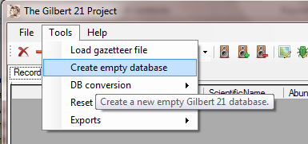The database folder should be a folder you have created especially to store your database files. This could be a folder called something like Gilbert 21 in your My Documents folder. (You don't need a value for V1 database - that is just for converting databases from previous versions.) Default import folder and Default export folder just tell Gilbert 21 where to look first when opening files from the GPS and saving exported files respectively. You can set these as you see fit.
It's a good idea to set a specific folder for storing Visiontac / Columbus files since you may create a large number of them. It is normally most convenient to create a new sub-folder (within this main folder) in which to store the files every time you copy them from your device.
Now close the options form.
Creating a new database
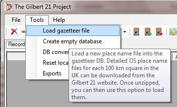You are ready to create a new Gilbert 21 database in the folder you specified on the options dialog. Go to the Tools menu and select the Create empty database item.
Once you've done that, you could start using Gilbert 21, but it is best to download some place-name (gazetteer) files first so that Gilbert 21 can help you match grid references to place names. To do that go to the Gazetteer Files page and click on the os50gaz.zip link to download that zip file to your computer.
At the same time, download one or two of the other more detailed gazetteer files corresponding to the geographical areas where you do your recording. Unzip these files on your computer to some convenient temporary location and then use the Load gazetteer file menu item from the Tools menu to select and load them into Gilbert's gazetteer database. Once this is done, you can delete these files (and the zip files).
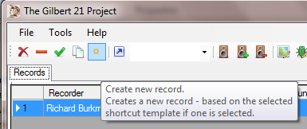
Enter a record from your notebook
This is how you can enter a record for which you already know the grid reference, date etc - e.g. records which you have in a notebook.
First click on the New record tool-button which looks like a little yellow star. This will create a new blank record. You will notice that the name of the recorder is already filled in with the default name that you supplied when you set up the options.
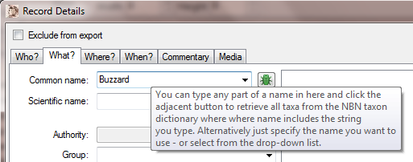
In Gilbert's main form, click on the empty cell for your new record under either CommonName or ScientificName. The record details form will appear where all these things can be specified.
Click in the Common name field and type the common name for the species you want to record - in this example it is Buzzard. Now click the Search button to search the National Biodiversity Network (NBN) taxon dictionary web service for this name.
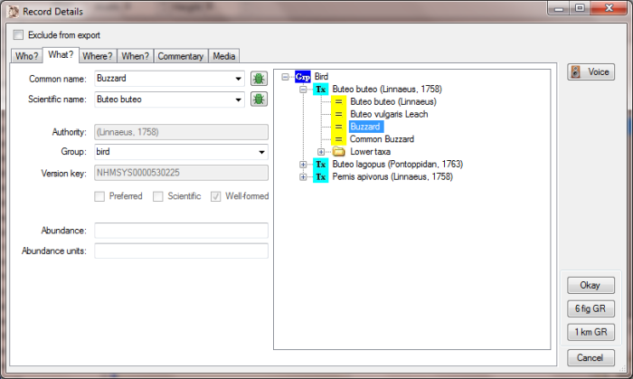
The NBN taxon dictionary web service will return the results shown above. By expanding the the item Buteo buteo and clicking on the Buzzard item which appears below it, you will populate the rest of the form with the required values.
Now we want to enter location information.
You can either use your keyboard's Tab key from the record details form to navigate to the Where tab or just click the tab.
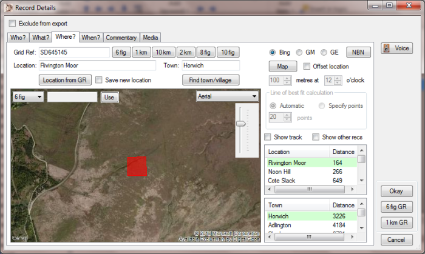
(From the main form, you can click the mouse on any field associated with the location to invoke the record details form with the Where tab selected.)
Assuming that, in this instance, you know the grid reference that you want to enter, type it into the Grid Ref box and click the Get location from grid ref button.
The Get location function compares the grid reference you entered to the gazetteer of geo-referenced location and town names that you built previously and lists the nearest ones.
The very nearest town and location are offered as default values. You can accept these, pick any others from the list, or simply type in your own.
You can see a map of the location specified by the grid reference by clicking the Map button. You can use the map options radio buttons to switch between Bing and Google Maps (or optionally linking to Google Earth). Use the controls on the map to change between they types of mapping provided by each supplier and to change the zoom level (with the slider control). You can also pan the map by dragging it with the mouse. If you click the mouse anywhere on the map, the grid reference of the location where you clicked is put into the box at the top of the map. You can use this new grid reference as the location for your record, by clicking the Use button.
Now we want to enter date information. Again you can use your keyboard's Tab key from the record details form to navigate to the When tab or just click on it. (From the main form, you can click the mouse on the date field to invoke the record details form with the When tab selected.)
To set a date you must un-check the No date checkbox. Today's date is presented by default, but you can click on the calendar icon to invoke a date selection control to change that.
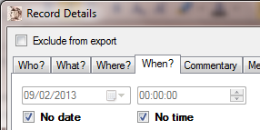You can navigate to the Commentary tab of the record details form in the way you have, by now, become used to. Here you can enter a comment or a Personal note if you like.
How you use these fields is up to you, but the general idea is that you can use the 'Comment' field to record notes that you would like to pass onto others when you export the record, whereas you can use the 'Personal notes' field to record information that is for your own use - stuff that you would not necessarily pass on with the records when you export them.
When you commit the record details form, you will notice that all the information you entered on it has be entered against the record in the main form.
Entering more records
To enter another new record, click the New record tool-button on the main form again and repeat the process outlined above.
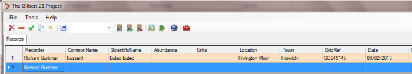
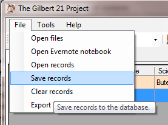The image above shows the main form just after you've clicked the New record tool-button again. Notice that the record previously entered is coloured orange (by default). This signifies a modified record that it has not been saved to the database.
To save the record to the database, select Save records from the File menu. All records will be saved to the database (unless they have are candidate records created from an input file - see below - that have not been modified). If the record is a valid biological record, the colour will change colour to green (by default). If it is not a valid biological record - e.g. because you haven't entered a date - it will turn grey (by default). Note that you can change all these default colours on the options dialog.
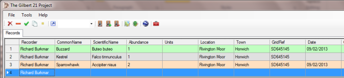
If, instead of clicking the New record tool-button, you click the Copy record tool-button (the one that looks like two bits of paper) when you have a record selected, something different happens. In the example below, the record of the Sparrowhawk was selected and then the Copy record tool-button clicked.
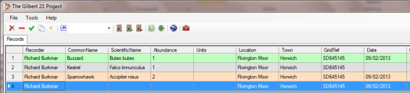
The big difference between this and the New record function is that is that the location and date information have been copied from the selected record. However the details of what was seen are not copied. (In fact you can select which fields are to be copied, and which are not, on the options form.)
The Copy record tool-button can be useful if you want to enter more than one record for the same location and date (e.g. records from a moth trap or a quadrat).
With the new record selected, hit the Tab key on your keyboard or click the mouse in the CommonName or ScientificName cells of the new record. The record details form appears again. See what happens if you start to type Buzzard into the Common name entry box: Buzzard will be suggested to you and you can just hit the Enter key on your keyboard to accept it. Gilbert 21 remembers the species you have entered before and helps you to select these quickly so that you don't have to keep getting the name from the NBN Gateway. It really speeds things up.
Entering records from data logger files
If you have downloaded the sample GPS datalogger files, copy the file Sample.zip to a folder on your computer, e.g. the Gilbert21 sub-folder of your My documents folder and extract the files. Once extracted, there will be a single CSV file and a number of WAV files.
For a demonstration of how to create records from the files created by the Visiontac VGPS-900, select the Open files item from the file menu and use the standard Windows file open dialog to open the sample file 10080200.CSV.
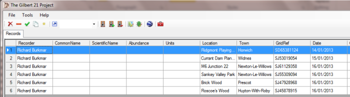
The import of the file automatically produces, in this case, 29 candidate records. Notice how all the location and date information is filled in automatically. This is because the GPS data logger file stores, for each 'voice tag' made, the location and time at which the tag was made. Of course this location information is just Gilbert 21's suggested locations based on the GPS location at which the tag was recorded and the data in its place name gazetteer. You don't have to accept any of these suggestions and you are free to edit any of the information.
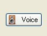To complete the records, you need to indicate, for each one, what was seen. When you invoke What tab of the record details form for one of these records, it will automatically play the sound file (WAV file) associated with it. You can replay the sound from any tab of the record details form by clicking the Voice button.
So you just listen to your own voice speaking what was seen and complete the form accordingly.
Note that voice tags may record much more than what was seen. For example it could include extra information about the location if the animal or plant was not seen exactly where the tag was made, or it may record information that can be recorded as a 'personal note' rather that a biological record per se.
Created with the Personal Edition of HelpNDoc: Create iPhone web-based documentation